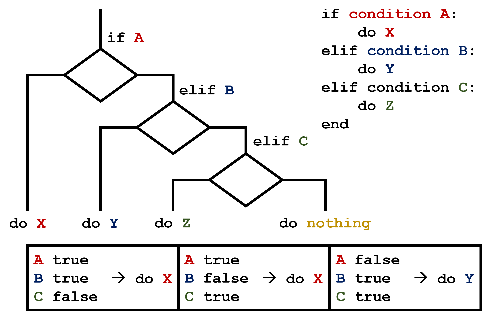

Making Choices
::::::::::::::::::::::::::::::::::::::: objectives
- Write conditional statements including
if,elif, andelsebranches. - Correctly evaluate expressions containing
andandor.
::::::::::::::::::::::::::::::::::::::::::::::::::
:::::::::::::::::::::::::::::::::::::::: questions
- How can my programs do different things based on data values?
::::::::::::::::::::::::::::::::::::::::::::::::::
In our last lesson, we discovered something suspicious was going on in our inflammation data by drawing some plots. How can we use Python to automatically recognize the different features we saw, and take a different action for each? In this lesson, we’ll learn how to write code that runs only when certain conditions are true.
Conditionals
We can ask Python to take different actions, depending on a condition, with an if statement:
::::::::::::::::::::::::::::::::::::::: instructor
The following example will lead to a syntax error in the Python prompt, as it seems to expect exactly one top-level statement per invocation. Removing print('done') from the example will fix the problem.
IPython executes the example from a single prompt without throwing an error.
::::::::::::::::::::::::::::::::::::::::::::::::::
num = 37
if num > 100:
print('greater')
else:
print('not greater')
print('done')not greater
doneThe second line of this code uses the keyword if to tell Python that we want to make a choice. If the test that follows the if statement is true, the body of the if (i.e., the set of lines indented underneath it) is executed, and “greater” is printed. If the test is false, the body of the else is executed instead, and “not greater” is printed. Only one or the other is ever executed before continuing on with program execution to print “done”:

Conditional statements don’t have to include an else. If there isn’t one, Python simply does nothing if the test is false:
num = 53
print('before conditional...')
if num > 100:
print(num, 'is greater than 100')
print('...after conditional')before conditional...
...after conditionalWe can also chain several tests together using elif, which is short for “else if”. The following Python code uses elif to print the sign of a number.
num = -3
if num > 0:
print(num, 'is positive')
elif num == 0:
print(num, 'is zero')
else:
print(num, 'is negative')-3 is negativeNote that to test for equality we use a double equals sign == rather than a single equals sign = which is used to assign values.
::::::::::::::::::::::::::::::::::::::::: callout
Comparing in Python
Along with the > and == operators we have already used for comparing values in our conditionals, there are a few more options to know about:
>: greater than<: less than==: equal to!=: does not equal>=: greater than or equal to<=: less than or equal to
::::::::::::::::::::::::::::::::::::::::::::::::::
We can also combine tests using and and or. and is only true if both parts are true:
if (1 > 0) and (-1 >= 0):
print('both parts are true')
else:
print('at least one part is false')at least one part is falsewhile or is true if at least one part is true:
if (1 < 0) or (1 >= 0):
print('at least one test is true')at least one test is true::::::::::::::::::::::::::::::::::::::::: callout
True and False
True and False are special words in Python called booleans, which represent truth values. A statement such as 1 < 0 returns the value False, while -1 < 0 returns the value True.
::::::::::::::::::::::::::::::::::::::::::::::::::
Checking our Data
Now that we’ve seen how conditionals work, we can use them to check for the suspicious features we saw in our inflammation data. We are about to use functions provided by the numpy module again. Therefore, if you’re working in a new Python session, make sure to load the module and data with:
import numpy
data = numpy.loadtxt(fname='inflammation-01.csv', delimiter=',')From the first couple of plots, we saw that maximum daily inflammation exhibits a strange behavior and raises one unit a day. Wouldn’t it be a good idea to detect such behavior and report it as suspicious? Let’s do that! However, instead of checking every single day of the study, let’s merely check if maximum inflammation in the beginning (day 0) and in the middle (day 20) of the study are equal to the corresponding day numbers.
max_inflammation_0 = numpy.amax(data, axis=0)[0]
max_inflammation_20 = numpy.amax(data, axis=0)[20]
if max_inflammation_0 == 0 and max_inflammation_20 == 20:
print('Suspicious looking maxima!')We also saw a different problem in the third dataset; the minima per day were all zero (looks like a healthy person snuck into our study). We can also check for this with an elif condition:
elif numpy.sum(numpy.amin(data, axis=0)) == 0:
print('Minima add up to zero!')And if neither of these conditions are true, we can use else to give the all-clear:
else:
print('Seems OK!')Let’s test that out:
data = numpy.loadtxt(fname='inflammation-01.csv', delimiter=',')
max_inflammation_0 = numpy.amax(data, axis=0)[0]
max_inflammation_20 = numpy.amax(data, axis=0)[20]
if max_inflammation_0 == 0 and max_inflammation_20 == 20:
print('Suspicious looking maxima!')
elif numpy.sum(numpy.amin(data, axis=0)) == 0:
print('Minima add up to zero!')
else:
print('Seems OK!')Suspicious looking maxima!data = numpy.loadtxt(fname='inflammation-03.csv', delimiter=',')
max_inflammation_0 = numpy.amax(data, axis=0)[0]
max_inflammation_20 = numpy.amax(data, axis=0)[20]
if max_inflammation_0 == 0 and max_inflammation_20 == 20:
print('Suspicious looking maxima!')
elif numpy.sum(numpy.amin(data, axis=0)) == 0:
print('Minima add up to zero!')
else:
print('Seems OK!')Minima add up to zero!In this way, we have asked Python to do something different depending on the condition of our data. Here we printed messages in all cases, but we could also imagine not using the else catch-all so that messages are only printed when something is wrong, freeing us from having to manually examine every plot for features we’ve seen before.
::::::::::::::::::::::::::::::::::::::: challenge
How Many Paths?
Consider this code:
if 4 > 5:
print('A')
elif 4 == 5:
print('B')
elif 4 < 5:
print('C')Which of the following would be printed if you were to run this code? Why did you pick this answer?
- A
- B
- C
- B and C
::::::::::::::: solution
Solution
C gets printed because the first two conditions, 4 > 5 and 4 == 5, are not true, but 4 < 5 is true. In this case only one of these conditions can be true for at a time, but in other scenarios multiple elif conditions could be met. In these scenarios only the action associated with the first true elif condition will occur, starting from the top of the conditional section.  This contrasts with the case of multiple if statements, where every action can occur as long as their condition is met. 
:::::::::::::::::::::::::
::::::::::::::::::::::::::::::::::::::::::::::::::
::::::::::::::::::::::::::::::::::::::: challenge
What Is Truth?
True and False booleans are not the only values in Python that are true and false. In fact, any value can be used in an if or elif. After reading and running the code below, explain what the rule is for which values are considered true and which are considered false.
if '':
print('empty string is true')
if 'word':
print('word is true')
if []:
print('empty list is true')
if [1, 2, 3]:
print('non-empty list is true')
if 0:
print('zero is true')
if 1:
print('one is true')::::::::::::::::::::::::::::::::::::::::::::::::::
::::::::::::::::::::::::::::::::::::::: challenge
That’s Not Not What I Meant
Sometimes it is useful to check whether some condition is not true. The Boolean operator not can do this explicitly. After reading and running the code below, write some if statements that use not to test the rule that you formulated in the previous challenge.
if not '':
print('empty string is not true')
if not 'word':
print('word is not true')
if not not True:
print('not not True is true')::::::::::::::::::::::::::::::::::::::::::::::::::
::::::::::::::::::::::::::::::::::::::: challenge
Close Enough
Write some conditions that print True if the variable a is within 10% of the variable b and False otherwise. Compare your implementation with your partner’s: do you get the same answer for all possible pairs of numbers?
::::::::::::::: solution
Hint
There is a built-in function abs that returns the absolute value of a number:
print(abs(-12))12:::::::::::::::::::::::::
::::::::::::::: solution
Solution 1
a = 5
b = 5.1
if abs(a - b) <= 0.1 * abs(b):
print('True')
else:
print('False'):::::::::::::::::::::::::
::::::::::::::: solution
Solution 2
print(abs(a - b) <= 0.1 * abs(b))This works because the Booleans True and False have string representations which can be printed.
:::::::::::::::::::::::::
::::::::::::::::::::::::::::::::::::::::::::::::::
::::::::::::::::::::::::::::::::::::::: challenge
In-Place Operators
Python (and most other languages in the C family) provides in-place operators that work like this:
x = 1 # original value
x += 1 # add one to x, assigning result back to x
x *= 3 # multiply x by 3
print(x)6Write some code that sums the positive and negative numbers in a list separately, using in-place operators. Do you think the result is more or less readable than writing the same without in-place operators?
::::::::::::::: solution
Solution
positive_sum = 0
negative_sum = 0
test_list = [3, 4, 6, 1, -1, -5, 0, 7, -8]
for num in test_list:
if num > 0:
positive_sum += num
elif num == 0:
pass
else:
negative_sum += num
print(positive_sum, negative_sum)Here pass means “don’t do anything”. In this particular case, it’s not actually needed, since if num == 0 neither sum needs to change, but it illustrates the use of elif and pass.
:::::::::::::::::::::::::
::::::::::::::::::::::::::::::::::::::::::::::::::
::::::::::::::::::::::::::::::::::::::: challenge
Sorting a List Into Buckets
In our data folder, large data sets are stored in files whose names start with “inflammation-” and small data sets – in files whose names start with “small-”. We also have some other files that we do not care about at this point. We’d like to break all these files into three lists called large_files, small_files, and other_files, respectively.
Add code to the template below to do this. Note that the string method startswith returns True if and only if the string it is called on starts with the string passed as an argument, that is:
'String'.startswith('Str')TrueBut
'String'.startswith('str')FalseUse the following Python code as your starting point:
filenames = ['inflammation-01.csv',
'myscript.py',
'inflammation-02.csv',
'small-01.csv',
'small-02.csv']
large_files = []
small_files = []
other_files = []Your solution should:
- loop over the names of the files
- figure out which group each filename belongs in
- append the filename to that list
In the end the three lists should be:
large_files = ['inflammation-01.csv', 'inflammation-02.csv']
small_files = ['small-01.csv', 'small-02.csv']
other_files = ['myscript.py']::::::::::::::: solution
Solution
for filename in filenames:
if filename.startswith('inflammation-'):
large_files.append(filename)
elif filename.startswith('small-'):
small_files.append(filename)
else:
other_files.append(filename)
print('large_files:', large_files)
print('small_files:', small_files)
print('other_files:', other_files):::::::::::::::::::::::::
::::::::::::::::::::::::::::::::::::::::::::::::::
::::::::::::::::::::::::::::::::::::::: challenge
Counting Vowels
- Write a loop that counts the number of vowels in a character string.
- Test it on a few individual words and full sentences.
- Once you are done, compare your solution to your neighbor’s. Did you make the same decisions about how to handle the letter ‘y’ (which some people think is a vowel, and some do not)?
::::::::::::::: solution
Solution
vowels = 'aeiouAEIOU'
sentence = 'Mary had a little lamb.'
count = 0
for char in sentence:
if char in vowels:
count += 1
print('The number of vowels in this string is ' + str(count)):::::::::::::::::::::::::
::::::::::::::::::::::::::::::::::::::::::::::::::
:::::::::::::::::::::::::::::::::::::::: keypoints
- Use
if conditionto start a conditional statement,elif conditionto provide additional tests, andelseto provide a default. - The bodies of the branches of conditional statements must be indented.
- Use
==to test for equality. X and Yis only true if bothXandYare true.X or Yis true if eitherXorY, or both, are true.- Zero, the empty string, and the empty list are considered false; all other numbers, strings, and lists are considered true.
TrueandFalserepresent truth values.
::::::::::::::::::::::::::::::::::::::::::::::::::